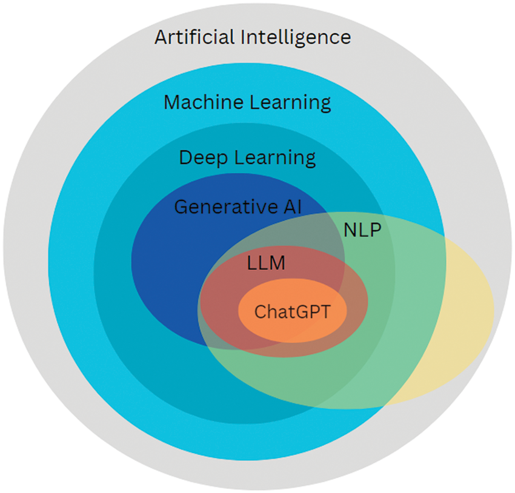

4 de septiembre de 2025
Javier Pérez Arteaga

La integración de la Inteligencia Artificial (IA) en el ámbito educativo ya no es una opción, sino una necesidad imperante.
La IA ha marcado un antes y un después en la forma en que accedemos a la información, procesamos el conocimiento y, en última instancia, aprendemos.
Nuestros estudiantes ya están interactuando con herramientas de IA fuera del aula. La verdadera pregunta no es si van a usar la IA, sino cómo, y cómo nosotros, como profesores, vamos a responder a esta realidad.
Debemos reconocer que la IA es una herramienta poderosa. Intentar frenar su uso solo generaría frustración y una brecha aún mayor entre la escuela y la empresa.
El panorama de la IA está en constante evolución. Conocer a los principales proveedores te permitirá explorar diversas opciones.
Un modelo de lenguaje es un sistema informático entrenado para realizar tareas que requieren inteligencia humana.
Hay LLM de diversos tipos. Los que más nos interesan son los modelos conversacionales, que funcionan prediciendo el siguiente token en una secuencia.
Es la unidad básica de procesamiento: una palabra, parte de una palabra o un signo de puntuación.
Ejemplo: "El perro juega" -> ["El", " perro", " juega"]
Puedes experimentar con este tokenizador en línea.
Permiten controlar cómo se genera la respuesta. Puedes probarlos en un playground como el de Groq.
Un LLM no tiene memoria en el sentido humano. Cada interacción es una instancia nueva y aislada.
Las aplicaciones de chatbot reenvían todo el historial de la conversación con cada nueva petición. Esto crea la ilusión de memoria, pero está limitado por la ventana de contexto.
Muchos proveedores permiten subir documentos, imágenes o enlaces para añadir contexto adicional, potenciando la capacidad del modelo para responder preguntas específicas.
Hasta hace poco, un LLM no podía realizar cálculos matemáticos complejos o buscar información actualizada en tiempo real.
La solución es la integración de herramientas (tools): funcionalidades externas que el LLM puede "invocar".
Piensa en el LLM como un director de orquesta y las herramientas como los músicos especializados.
El LLM no ejecuta la herramienta, sino que sugiere su uso a la interfaz que lo controla, la cual ejecuta la acción y devuelve el resultado al modelo.
Llevan la integración de herramientas a un nivel superior, permitiendo realizar tareas más complejas y autónomas.
Una secuencia predefinida de pasos que un LLM sigue para lograr un objetivo. Es como una receta.
Ventajas: Automatización, consistencia y eficiencia.
Un software inteligente que usa un LLM como "cerebro" para planificar, ejecutar y monitorizar tareas de forma autónoma.
Ventajas: Autonomía, flexibilidad y resolución de problemas complejos.
La Comunidad de Madrid ha establecido acuerdos con Google y Microsoft para integrar herramientas de IA en el entorno educativo.
Un prompt es la entrada que proporcionas a un LLM: una pregunta, una tarea o una instrucción.
Imagina un prompt como la acción de montar el escenario para una conversación. Le indica a la IA qué papel debe desempeñar, qué contexto considerar y qué resultado se espera.
La calidad de la respuesta depende de 3 factores:
Prompting es el proceso de diseñar, escribir y refinar los prompts para obtener la mejor respuesta posible de un modelo de IA.
Es una habilidad iterativa que requiere experimentación y ajuste.
1. Objetivo: "Necesito un resumen de la Revolución Francesa para estudiantes de 3º de la ESO, enfocado en las causas y consecuencias principales, con una extensión de 200 palabras."
2. Primer borrador:
"Haz un resumen de la Revolución Francesa para alumnos de 3º ESO. Que sea sobre las causas y lo que pasó después. Unas 200 palabras."
3. Evaluación: "El resumen es demasiado largo, no menciona el papel de Napoleón y el lenguaje es un poco complejo para esa edad."
4. Refinamiento:
"Actúa como un profesor de historia de secundaria. Genera un resumen de la Revolución Francesa de no más de 200 palabras. Céntrate en las principales causas (crisis económica, ideas ilustradas) y las consecuencias clave, incluyendo la ascensión y el impacto de Napoleón. Utiliza un lenguaje sencillo y accesible para estudiantes de 3º de la ESO."
La diferencia radica en la especificidad, el contexto y las instrucciones claras.
Demasiado genérico y vago.
"¿Qué hoteles hay en París?"
La respuesta será una lista sin criterio, poco útil.
Establece rol, contexto, preferencias y formato.
La respuesta será precisa y alineada con las necesidades.
El proceso de prompting no es lineal, es un ciclo continuo.
"Específico" no es sinónimo de "largo". Evita la ambigüedad y ve al grano.
Abiertas para creatividad, directivas para resultados estructurados.
Adapta la respuesta a un contexto particular especificando el tono y la persona.
Esta técnica invierte el proceso tradicional, permitiendo que sea la propia IA quien nos ayude a generar el prompt ideal para nuestras necesidades.
Es la práctica de instruir a la IA para que te genere un prompt.
Inviertes el proceso: en lugar de diseñar el prompt final, le pides a la IA que lo elabore por ti basándose en un objetivo y un marco que tú le proporcionas.
El proceso de Meta Prompting se basa en aprovechar la capacidad de la IA para comprender y aplicar marcos conceptuales, reglas y listas de verificación que tú le proporcionas.
Eres un experto en diseño de prompts. Tu tarea es crear el prompt más efectivo para que otra IA (o tú mismo, en una segunda interacción) genere directrices de un plan de negocio para una pequeña empresa de turismo rural.
Una plantilla es una estructura predefinida que puedes reutilizar para crear prompts personalizados de manera eficiente. En lugar de empezar desde cero cada vez, puedes crear un prompt genérico parametrizable al que simplemente le pases una serie de parámetros que se insertarán en lugares específicos de la plantilla.
Actualmente, ningún proveedor de LLMs ofrece plantillas de prompt como una funcionalidad integrada, pero puedes crear tus propias plantillas y utilizarlas en tus interacciones con la IA usando utilidades de algunos proveedores como los GEM de Gemini o los GPT de ChatGPT.
Analiza el siguiente [TIPO_DE_DOCUMENTO] y [TAREA_DE_ANALISIS].
El objetivo es [OBJETIVO_DEL_ANALISIS].
Dirigido a [PÚBLICO_OBJETIVO].
El resumen debe ser [LONGITUD_MAXIMA] y destacar [PUNTOS_CLAVE_A_DESTACAR].
[TEXTO_A_ANALIZAR]
TIPO_DE_DOCUMENTO: "informe financiero"
TAREA_DE_ANALISIS: "extrae las principales conclusiones sobre la rentabilidad de la empresa"
OBJETIVO_DEL_ANALISIS: "presentar un resumen para la junta directiva"
PÚBLICO_OBJETIVO: "directivos no financieros"
LONGITUD_MAXIMA: "200 palabras"
PUNTOS_CLAVE_A_DESTACAR: "los 3 factores clave que influyen en la rentabilidad"
TEXTO_A_ANALIZAR: https://www.bbva.com/wp-content/uploads/2025/04/Informe-Enero-Marzo-2025.pdf
Esta técnica le pide a la IA que "piense en voz alta" o que explique su razonamiento paso a paso antes de dar la solución definitiva.
Mejora la precisión, la transparencia y maneja mejor la complejidad.
El Chain of Thought (CoT) instruye al LLM para que desglose el problema en una serie de pasos intermedios, un proceso de razonamiento paso a paso, antes de proporcionar la respuesta final. Esta técnica es particularmente efectiva porque:
La implementación de Chain of Thought a menudo supone añadir frases como "piensa paso a paso", "razona de forma lógica", "explica tu proceso de pensamiento", o dar ejemplos de razonamiento secuencial dentro del prompt.
Completa la frase con una sola palabra:
Estoy harto de mi coche. No para de dar problemas. Ya he mirado el modelo de coche que me quiero comprar.
Mañana voy a llevar mi coche al ______
Respuesta (sin Chain of Thought):
taller
Completa la frase analizando paso a paso lo que se dice y completando con la palabra que sea más probable:
Estoy harto de mi coche. No para de dar problemas. Ya he mirado el modelo de coche que me quiero comprar.
Mañana voy a llevar mi coche al ______
Respuesta (con Chain of Thought):
El paso a paso del análisis es el siguiente:
1. "Estoy harto de mi coche. No para de dar problemas." Esto indica que el coche actual está en mal estado o es una fuente constante de frustración.
2. "Ya he mirado el modelo de coche que me quiero comprar." Esto sugiere que el usuario está planeando deshacerse de su coche actual para adquirir uno nuevo.
3. "Mañana voy a llevar mi coche al ______" Dada la frustración con el coche actual y el plan de comprar uno nuevo, la acción más lógica es deshacerse del coche viejo. La palabra más probable para completar la frase es desguace (o concesionario, si la intención es entregarlo como parte de pago).
--- Mañana voy a llevar mi coche al desguace.
Es una técnica que permite a la IA no solo generar contenido, sino también evaluarlo y mejorarlo de manera autónoma en un proceso de dos fases: generación y crítica.
En esencia, el Self-Critique Prompting implica dos fases principales:
Es una técnica que permite a la IA construir tablas comparativas multifactoriales para evaluar y comparar múltiples opciones basándose en una serie de criterios.
Una matriz de decisión es una tabla que se utiliza para comparar y evaluar múltiples opciones (alternativas) basándose en una serie de criterios predefinidos.
La Generación de Matrices de Decisión con IA implica:
Es adecuada cuando necesitas comparar múltiples opciones de forma estructurada, considerando varios factores y sus respectivas importancias.
Se utiliza para analizar una salida existente y deducir el prompt original que probablemente la generó.
"Aquí está el plan de lanzamiento del producto para las cámaras de seguridad inteligentes para el hogar. ¿Qué `prompt` creó con mayor probabilidad este plan?"
Es útil cuando se necesita creatividad y flexibilidad. Permite que la IA se ramifique en múltiples estrategias o ideas potenciales antes de centrarse en la mejor.
"Genere de tres a cinco ideas de campañas creativas para lanzar una nueva herramienta de productividad de IA. Usando el razonamiento `Tree of Thought`, explore diferentes enfoques de marketing. Luego, evalúe cada idea basándose en el alcance, el costo y la idoneidad para un presupuesto de `startup`, y recomiende la mejor."